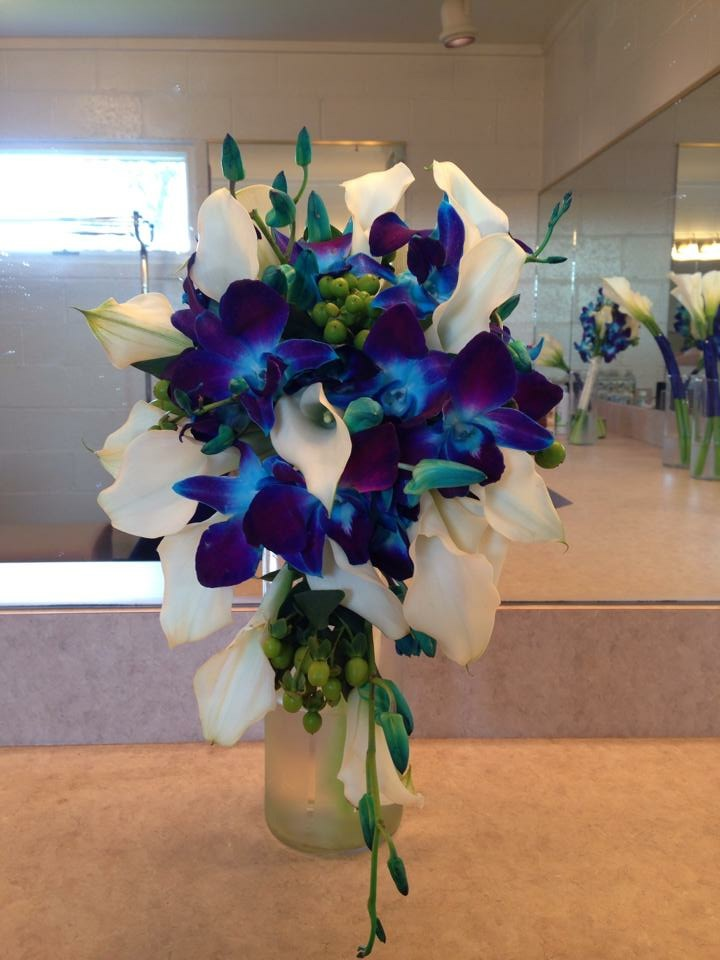

Serving Elizabethtown
Wedding flowers in Elizabethtown.
Where Dauphin County rolls into Lancaster County, Elizabethtown sits in some of the prettiest wedding-venue landscape in Pennsylvania — farms, orchards, restored barns, and countryside views that do half your decorating for you. Flowers do the rest.
Countryside celebrations
Flowers that belong in the landscape.
Farm and countryside weddings reward florals that feel grown rather than arranged — loose, garden-influenced designs, warm seasonal palettes, and generous greenery. Against a green landscape, all-white palettes can wash out; we'll steer you toward tones that photograph beautifully in golden-hour farmland light.
- Garden-style bouquets with movement & texture
- Arbor & arch florals for outdoor ceremonies
- Long farm-table garlands & clustered centerpieces
- Heat-tolerant designs for summer celebrations
- Delivery and full setup on the Lancaster County line

How it works
Simple, custom, no pressure.
- Free consultation. Tell us your venue, colors, season, and budget — in person, by phone, or over Zoom.
- Custom proposal. A design built around your priorities, not a fixed package.
- Design & delivery. We deliver and set up everything at your Elizabethtown venue before you arrive.
Getting married in Elizabethtown?
Let's design flowers worthy of that countryside backdrop. Consultations are always free.
Book a Consultation